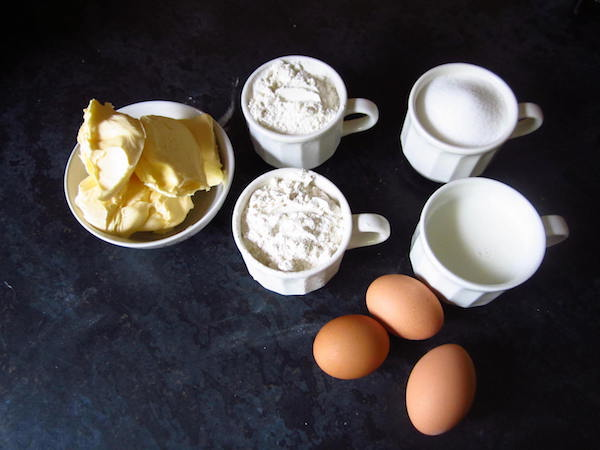
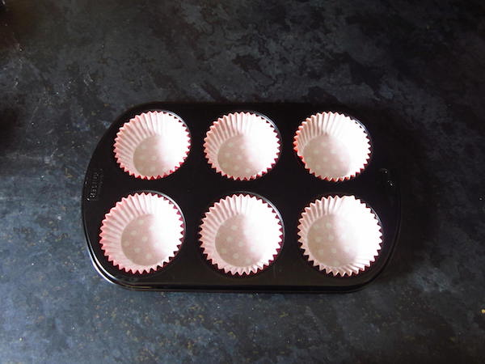
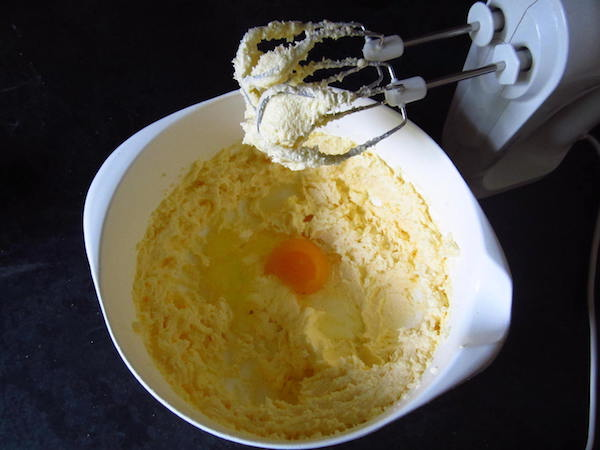
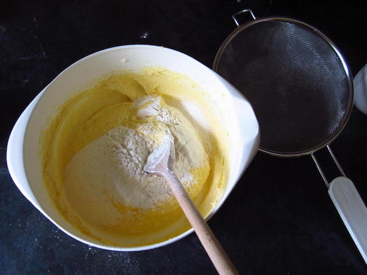
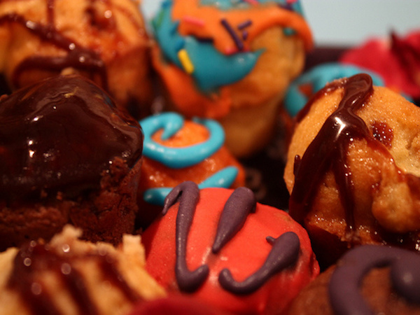

Basisrecept
Dit is een basisrecept voor cake, die niet kan mislukken. Voor iets meer afwisseling laat u uw fantasie werken en voegt u allerlei ingredienten toe.
-
1. Ingrediënten
- 200 gram zachte boter
- 200 gram suiker
- 4 eieren
- 200 gram bloem
-
2. Voorbereiding
Zet een bakblik klaar. Verwarm de oven op 175°.
-
3. Boter en suiker

Roer de boter zacht en voeg de suiker toe. Roer net zo lang totdat het luchtig en romig word.
-
4. Eieren
Voeg een voor een de eieren toe. Wacht met het toevoegen van het volgende ei, totdat het voorgaande ei geheel is opgenomen door de boter en de suiker.
-
5. Bloem
Zeef de bloem. Voeg al mixende de bloem toe aan het mengsel.
-
6. Bakken

Doe het mengsel in het ingevette cakeblik. Schuif het blik in de voorverwarmde oven. Bak de cake in een middelmatig warme oven in ongeveer 30 minuten gaar.
-
7. Uit de oven

Laat de cake helemaal afkoelen.
-
8. Klaar
Eet smakelijk!